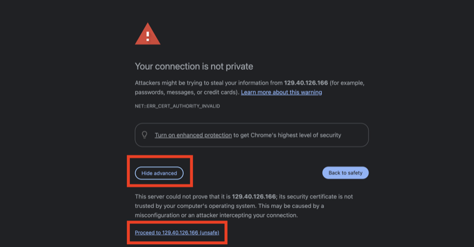
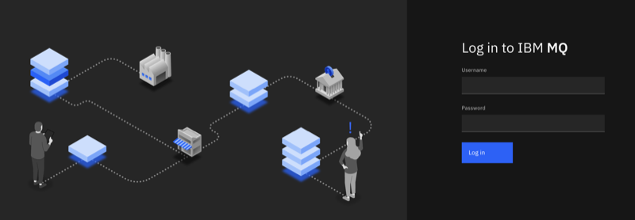
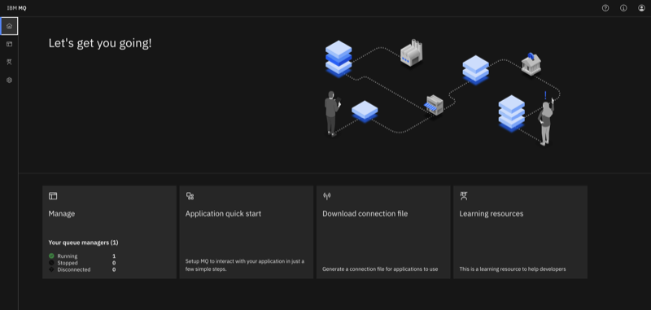

z/OS Standard + MQ
The z/OS Standard + MQ image is a pre-configured z/OS 3.1 environment with IBM MQ for z/OS 9.4 CD installed and configured. It is built on top of the z/OS Standard Image and is available on TechZone for MQ demonstrations, application integration, and messaging development.
What's Included
- z/OS 3.1 — See Base z/OS Configuration for the full system layout
- IBM MQ for z/OS 9.4 CD — Queue manager installed, configured, and started after provisioning
- MQ Web Console — Browser-accessible administration UI, served over HTTPS via an MQ Web Liberty server
- MQ REST API — Full v3 admin and messaging REST API, accessible on the same HTTPS port as the console
- RACF security — MQ subsystem, started-task, and web console profiles pre-configured
- TCP/IP listener — MQ listener active and accepting client connections
- Autostart — Queue manager, channel initiator, and web server all start automatically at IPL
For the full product list including FMIDs, see Installed Products.
Use Cases
- IBM MQ for z/OS demonstrations and proof-of-concept
- REST API messaging and administration walkthroughs
- MQ client application development and testing (Java, Python, C)
- Hybrid cloud integration scenarios — connecting distributed MQ clients to a z/OS queue manager
- MQ Web Console administration demonstrations
MQ Web Console
The MQ Web Console and REST API are served by a Liberty-based web server (MQWEB started task) running on the z/OS system. The console is secured using RACF SAF authentication — only RACF users with the appropriate MQ web group membership can access it.
Ensure your VPN is connected (see Connecting to Your Instance), then navigate to:
https://<your-zos-ip>:9443/ibmmq/console/
The certificate is self-signed — accept the browser warning to proceed.

You will then see a login screen:

Log in with one of the pre-configured users:
| Username | Passphrase | Access |
|---|---|---|
MWQADM1 | MQAdmin_SecurePhrase! | Web Console admin |
MQWADMR1 | MQAdminRO_SuperSecure! | Web Console read-only |
MQWUSER1 | MQApp_KindaSecure! | Application user |
After login you will see the MQ Web Console home page with the ZQSX queue manager listed and running.

The REST API is available on the same port:
| Access point | URL |
|---|---|
| MQ REST API (admin) | https://<your-zos-ip>:9443/ibmmq/rest/v3/admin/qmgr |
| MQ REST API (messaging) | https://<your-zos-ip>:9443/ibmmq/rest/v3/messaging/qmgr/ZQSX/... |
Pass -k / --insecure with curl to bypass the self-signed certificate. The REST API requires the ibm-mq-rest-csrf-token header on all mutating requests (any value is accepted).
If the Console Doesn't Load
If the browser can't reach the page, verify the MQ components are up. From a 3270 operator console, issue:
D A,MQWEB -- MQ Web server started task
D SSI,SUB=ZQSX -- ZQSX subsystem status (expect ACTIVE)
D A,ZQSXMSTR -- Queue manager address space
D A,ZQSXCHIN -- Channel initiator address space
To check the listener, use DISPLAY CHINIT — look for the message TCP/IP listener INDISP=QMGR started in the output:
/ZQSX DISPLAY CHINIT
Or from USS (via SSH), use the opercmd utility to issue the same commands:
opercmd "D A,MQWEB"
opercmd "D SSI,SUB=ZQSX"
opercmd "D A,ZQSXMSTR"
opercmd "D A,ZQSXCHIN"
opercmd "ZQSX DISPLAY CHINIT"
If MQWEB shows NOT FOUND, start it manually and allow ~30 seconds for Liberty to initialize before retrying the browser:
opercmd "S MQWEB"
Queue Manager
| Property | Value |
|---|---|
| Queue manager name | ZQSX |
| Subsystem ID (SSID) | ZQSX |
| Product HLQ | MQ945CD |
| Queue manager HLQ | ZQSX |
| TCP/IP listener port | 1414 |
| MQ Web Console / REST API port (HTTPS) | 9443 |
| MSTR started task | ZQSXMSTR |
| CHIN started task | ZQSXCHIN |
| MQWEB started task | MQWEB |
Key Datasets and Paths
| Item | Location |
|---|---|
| MQ product libraries | MQ945CD.SCSQAUTH, MQ945CD.SCSQANLE |
| Queue manager SCSQPROC | ZQSX.SCSQPROC |
| MSTR procedure | SYS1.PROCLIB(ZQSXMSTR) |
| CHIN procedure | SYS1.PROCLIB(ZQSXCHIN) |
| MQWEB procedure | SYS1.PROCLIB(MQWEB) |
| MQ USS mountpoint | /usr/lpp/mqm |
| MQWEB user directory | /u/mqweb |
| User catalog alias | ZQSX |
| SMS storage volume | USMS01 |
RACF Security
The following RACF groups are created and used to control access to MQ resources:
| Group | Purpose |
|---|---|
MQADMN | MQ z/OS administrators — full queue manager authority |
MQWADMN | MQ Web Console and REST API administrators |
MQADMNRO | MQ Web Console and REST API read-only access |
MQAPP | Application users — messaging access under their own z/OS identity |
MQQMGRGP | Queue manager started-task group (ZQSXMSTR, ZQSXCHIN) |
MQWEBGRP | MQ Web server started-task group (MQWEB) |
MQWEBUSS | Group for USS file access to the MQWEB user directory |
Note: MQ subsystem and web console security profiles are enforced — unauthorised access attempts will be rejected by RACF. Dataset profiles are configured in warning mode, so access to unprotected datasets will be logged but not blocked.
Further Reading
- z/OS Standard Image — Base system that this image extends
- Installed Products — Full product table with FMIDs
- Connecting to Your Instance — VPN, SSH, and 3270 terminal setup